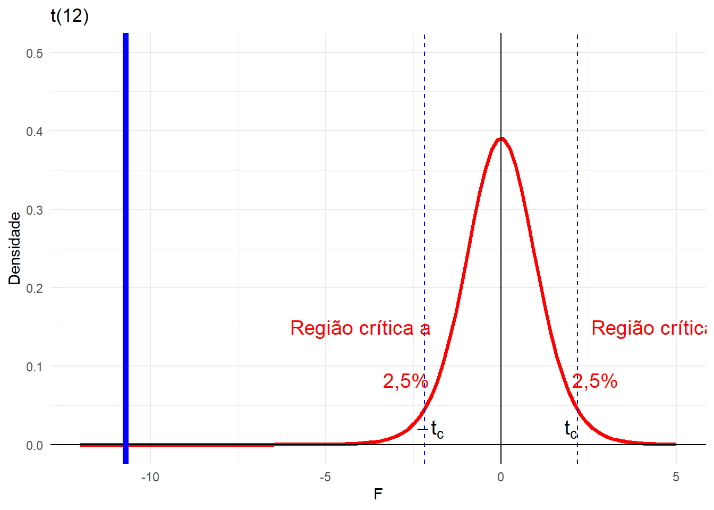

15 Delineamento Inteiramente Casualizado
15.1 Caracterização
O delineamento inteiramente casualizado é o mais simples de todos os delineamentos experimentais, e os experimentos instalados de acordo com este delineamento são chamados de experimentos interiamente casualizados ou experimentos inteiramente ao acaso.
Este delineamento apresenta as seguintes características:
Leva em consideração os princípios da repetição e da casualização, deixando de lado o princípio do controle local e, portanto, as repetições não são organizadas em blocos.
Os tratamentos são designados às parcelas de forma inteiramente casual, com qualquer número de repetições.
As principais vantagens desse delineamento são as seguintes:
Flexibilidade, uma vez que o número de repetições pode variar de um tratamento para outro, sem causar sérios problemas na análise.
Proporciona o maior número de graus de liberdade possível para o resíduo.
As principais desvantagens desse delineamento são:
As parcelas experimentais devem ser homogêneas.
Leva a uma alta estimativa da variância residual \(QM_{Res}\), uma vez que todas as variações, exceto aquela devido ao efeito de tratamentos, são tomadas como variação do acaso.
Para a instalação desse experimento devemos ter certeza da homogeneidade das condições experimentais.
Este delineamento é bastante utilizado em ensaios de laboratório e em ensaios com vasos, realizados dentro de casas de vegetação, em que as condições experimentais podem ser perfeitamente controladas.
A distribuição casual dos tratamentos a todas as parcelas do experimento é a principal característica deste delineamento.
Por exemplo, num experimento no delineamento inteiramente casualizado com \(I = 5\) tratamentos (A, B, C, D e E) e \(J = 4\) repetições (1 a 4), a casualização dos tratamentos seria feita sorteando-se para cada uma das \((5 \times 4 = 20)\) parcelas do experimento uma combinação de tratamento e repetição, ou seja:
\[ \begin{matrix} A1 & A2 & A3 & A4 \\ B1 & B2 & B3 & B4 \\ C1 & C2 & C3 & C4 \\ D1 & D2 & D3 & D4 \\ E1 & E2 & E3 & E4 \end{matrix} \]
Assim, um sorteio para distribuição dos tratamentos às parcelas poderia ser o seguinte:

# Definindo o número de tratamentos e repetições
I <- 5
J <- 4
# Criando os tratamentos a partir da letras do conjunto LETTERS já definidos no R
tratamentos <- rep(LETTERS[1:I], J)
# Criando as repetições
repeticoes <- rep(1:J, rep(I,J))
# Criando os identificadores (nomes) das parcelas
parcelas <- paste0(tratamentos,repeticoes)
# definindo a semente aleatória e sorteio das parcelas, sem reposição
set.seed(1235)
sample(parcelas, size = 20, replace = FALSE)## [1] "E3" "B3" "C1" "E4" "E1" "D3" "D1" "D4" "C3" "C4" "A4" "B2" "B1" "B4" "A2"
## [16] "E2" "D2" "C2" "A1" "A3"\[ \begin{matrix} E3 & B3 & C1 & E4 & E1\\ D3 & D1 & D4 & C3 & C4\\ A4 & B2 & B1 & B4 & A2\\ E2 & D2 & C2 & A1 & A3 \end{matrix} \]
15.2 Modelo matemático
Todo delineamento experimental possui um modelo matemático que o representa, e deve ser levado em conta na análise de variância, aceitando algumas hipóteses básicas necessárias para a validade da análise.
No caso do \(DIC\), o modelo matemático é definido como:
\[ y_{ij}= \mu + \tau_i + \epsilon_{ij} \] onde:
\(y{ij}\): é o valor observado na parcela que recebeu o tratamento i na repetição j;
\(\mu\): é a média geral do experimento;
\(\tau_i\) é o efeito devido ao tratamento i que foi aplicado à parcela;
\(\epsilon_{ij}\) é o efeito dos fatores não controlados na parcela que recebeu o tratamento i na repetição j.
15.3 Hipóteses básicas para análise de variância
As hipóteses básicas que devemos admitir para tornar válida a aplicação da análise de variância são as seguintes:
Aditividade: Os efeitos dos fatores do modelo são aditivos.
Independência: Os erros (desvios) \(\epsilon_{ij}\), devido aos efeitos de fatores não controlados ou acaso devem ser independentes.
Homocedasticidade (homogeneidade de variâncias): Os erros (desvios) \(\epsilon_{ij}\), devido ao acaso devem possuir variância comum \(\sigma^2\)
Normalidade dos desvios: Os erros ou desvios \(\epsilon_{ij}\) devido ao acaso devem possuir distribuição normal de probabilidades.
Uma forma resumida de apresentar estas quatro pressuposições é apresentada a seguir:
\[ \epsilon_{ij} \overset{iid}{\tilde{} }N(0,\sigma^2) \\ \]
Quando as hipóteses básicas não são satisfeitas, como no caso mais frequente a homocedasticidade, deve-se utilizar uma transformação dos dados para contormar o problema.
1. Raiz Quadrada: \(y'=\sqrt{y}\)
Geralmente utilizada para dados de contagem, que frequentemente seguem a distribuição de Poisson, em que a média e a variância são iguais. Exemplo, número de ácaros por folha, número de frutos atacados, número de plantas doentes por parcela, etc. No caso de ocorrência de valores nulos ou baixos, recomenda-se \(y'=\sqrt{y+0,5}\) ou \(y'=\sqrt{y+1}\).
2. Arco Seno: \(y'=arcoseno\sqrt{\frac{y}{100}}\)
Recomendada para dados de porcentagem, proveniente de contagem, que geralmente seguem a distribuição binomial, como exemplo, \(\%\) de plantas atacadas, \(\%\) de germinação, etc.
3. Transformação Logarítmica: \(y'=log{(y)}\)
Quando é constatada uma certa proporcionalidade entre as médias e os desvios padrões dos tratamentos. Exemplo: No caso de contagem de insetos, se a população é numerosa, as contagens serão altas para a testemunha e para os tratamentos que não controlam a praga, enquanto que, para os tratamentos que controlam a praga, a amplitude de variação será baixa.
Quando houver zeros entre as contagens, utiliza-se \(y'=log(y+1)\).
15.4 Obtenção da análise de variância
Para a obtenção da análise de variância, vamos considerar um experimento inteiramente casualizado com I tratamentos e J repetições.
Trat \ Repetição |
\(1\) | \(2\) | … | \(j\) | … | \(J\) | Total | |
|---|---|---|---|---|---|---|---|---|
| \(1\) | \(y_{11}\) | \(y_{12}\) | … | \(y_{1j}\) | … | \(y_{1J}\) | \(T_1 = \sum_{j=1}^J y_{1j}\) | |
| \(2\) | \(y_{21}\) | \(y_{22}\) | … | \(y_{2j}\) | \(y_{2J}\) | \(T_2 = \sum_{j=1}^J y_{2j}\) | ||
| … | … | … | … | … | … | … | … | |
| \(i\) | \(y_{i1}\) | \(y_{i2}\) | … | \(y_{ij}\) | — | \(y_{iJ}\) | \(T_i = \sum_{j=1}^J y_{ij}\) | |
| … | … | … | … | … | … | … | … | |
| \(I\) | \(y_{I1}\) | \(y_{I2}\) | … | \(y_{Ij}\) | … | \(y_{IJ}\) | \(T_I = \sum_{j=1}^J y_{Ij}\) | |
| Total | \(G = \sum_{i=1}^I\sum_{j=1}^J y_{ij}\) |
De acordo com o modelo matemático deste delienamento, o valor observado na parcela que recebeu o tratamento i na repetição j é representado por:
\[ y_{ij}= \mu + \tau_i + \epsilon_{ij} \]
Porém, os parâmetros do modelo são desconhecido. Assim, devemos incialmente, obter estimativas desses parâmetros.
O método utilizado para obtenção das estimativas desses parâmetros é chamado de Método dos Mínimos Quadrados, e consiste em obter as estimativas que minimizam a soma dos quadrados dos erros \(\epsilon_{ij}\)
Utilizamos o Métodos dos Mínimos Quadrados, para minimizar a soma dos quadrados dos erros \(\epsilon_{ij}\):
\[ \epsilon_{ij}= y_{ij} - \mu - \tau_i \]
\[ \epsilon_{ij}^2= (y_{ij} - \mu - \tau_i)^2 \]
\[ \sum_{i=1}^I\sum_{j=1}^J\epsilon_{ij}^2=\sum_{i=1}^I\sum_{j=1}^J( y_{ij} - \mu - \tau_i)^2 \] Fazendo \(z=\sum_{i=1}^I\sum_{j=i}^j\epsilon_{ij}^2\), derivando em relação a \(\mu\) e em relação \(\tau_i\) e igualando as equações a \(0\), temos:
\[ \begin{cases} \sum_{i=1}^I\sum_{j=1}^Jy_{ij} - IJ\hat{m} -J\sum_{i=1}^I \hat{\tau_i} =0 \\ \sum_{j=1}^Jy_{ij}-J\hat{m}-J\hat{\tau_i}=0 \end{cases} \]
Impondo a restrição \(\sum_{i=1}^I \hat{\tau_i}=0\), temos:
\[ \begin{cases} \sum_{i=1}^I\sum_{j=i}^Jy_{ij} - IJ\hat{m} =0 \\ \sum_{j=1}^Jy_{ij}-J\hat{m}-J\hat{\tau_i}=0 \end{cases} \] Então: \[ \hat{m} = \frac{\sum_{i=1}^I\sum_{j=i}^Jy_{ij}}{IJ}=\frac{G}{IJ} \] e, fazendo \(T_i=\sum_{j=1}^Jy_{ij}\), sendo o total para o tratamento específico i:
\[ \hat{\tau_i} =\frac{T_i}{J} - \hat{m} \]
Podemos agora obter as somas de quadrados:
1. Soma de Quadrados Total: \(SQ_{Total}\) - é definida como a soma dos quadrados dos desvios em relação à média aritmética:
\[ SQ_{Total} = \sum_{i=1}^I\sum_{j=i}^J(y_{ij} - \hat{m})^2 \\ \] Manipulando algebricamente, temos:
\[ SQ_{Total} = \sum_{i=1}^I\sum_{j=i}^Jy_{ij}^2 - \frac{G^2}{IJ} \]
Ao fazermos \(C = \frac{G^2}{IJ}\) temos portanto:
\[ SQ_{Total} = \sum_{i=1}^I\sum_{j=i}^Jy_{ij}^2 - C \]
2. Soma de Quadrados de Tratamentos: \(SQ_{Tratamento}\) - é definida como a soma dos quadrados dos efeitos dos tratamentos:
\[ SQ_{Tratamento} = \frac{\sum_{i=1}^IT_i^2}{J} - C \]
Lembrando que:
\[ T_i^2 = \left ( \sum_{j=1}^J{y_{ij}} \right)^2 \]
e
\[ C = \frac{G^2}{IJ} \]
3. Soma de Quadrados do resíduo: \(SQ_{Resíduo}\) - é definida como a soma dos quadrados do efeito do acaso. Lembrando que no delineamento inteiramente casualizado a variância total é dividida em duas partes, uma devido ao efeito dos tratamentos e outra devido ao efeito dos fatores não controlados ou acaso (Resíduo), então, a soma de quadrados do resíduo pode ser obtida por diferença, ou seja:
\[ SQ_{Resíduo} = SQ_{Total} - SQ_{Tratamento} \]
Podemos, a seguir, montar o seguinte quadro de análise de variância:
| Causas (ou Fontes) de Variação | \(GL\) | \(SQ\) | \(QM\) | \(F\) |
|---|---|---|---|---|
| Tratamento | \(I-1\) | \(SQ_{Tratamento}\) | \(SQ_{Trat}/(I-1)\) | \(QM_{Trat}\)/\(QM_{Resíduo}\) |
| Resíduo | \(I(J-1)\) | \(SQ_{Res}\) | \(SQ_{Res}/[I(J-1)]\) | |
| Total | \(IJ-1\) | \(SQ_{Total}\) |
As hipóteses testadas são:
\[ \begin{cases} H_0: \tau_i = 0, i=1,2,...,I. \\ H_1: \text{pelo menos um valor } \tau_i \neq 0 \end{cases} \]
CRITÉRIO DO TESTE: Comparamos o valor \(F\) calculado para tratamentos com o valor de \(F\) tabelado em função do número de graus de liberdade (GL) de tratamentos e do resíduo, ao nível \(\alpha\) de significância.
Se \(F_{Trat} > F_{Tab}\), concluímos que o teste é significativo, portanto, rejeitamos \(H_0\) e devemos concluir que existe diferença significativa entre os efeitos dos tratamentos testados em relação às variáveis (característica) em estudo.
15.4.1 EXEMPLO DE APLICAÇÃO
Num experimento inteiramente casualizado, de competição de variedades de mandioca, realizado numa área perfeitamente homogênea quanto às condições experimentais, foram utilizadas \(5\) repetições das seguintes variedades:
1 - IAC 5
2 - IAC 7
3 - IAC 11
4 - IRACEMA
5 - MANTIQUEIRA
A designação dos tratamentos às parcelas no campo, juntamente com as produções, expressa em t/ha, foi a seguinte:

Dados originais:DOWNLOAD
Com estes dados, podemos organizar o quadro seguinte:
| Tratamentos | Rep.1 | Rep.2 | Rep.3 | Rep.4 | Rep. 5 | Total |
|---|---|---|---|---|---|---|
| 1 - IAC_5 | 38,9 | 25,4 | 20,3 | 25,7 | 29,3 | 139,6 |
| 2 - IAC_7 | 20,9 | 26,2 | 32,3 | 28,3 | 28,7 | 136,4 |
| 3 - IAC_11 | 28,1 | 27,0 | 25,8 | 26,9 | 22,3 | 130,1 |
| 4 - IRACEMA | 38,7 | 43,2 | 41,7 | 39,0 | 40,3 | 202,9 |
| 5 - MANTIQUEIRA | 47,8 | 47,8 | 44,7 | 50,5 | 56,4 | 247,2 |
| Total | 856,2 |
As hipóteses que desejamos testar são:
\(H_0\): As variedades de mandioca testadas não são diferentes entre si quanto à produção.
\(H_1\): As variedade de mandioca testadas diferem entre si quanto à produção.
Cálculo das Somas de Quadrados
a) Soma de Quadrados Total:
\[ SQ_{Total} = \sum_{i=1}^I\sum_{j=i}^Jy_{ij}^2 - C \\ SQ_{Total} = \sum_{i=1}^I\sum_{j=i}^Jy_{ij}^2 - \frac{G^2}{IJ} \\ SQ_{Total} = (38,9^2+25,4^2+...+56,4^2) - \frac{856,2^2}{5\cdot5}\\ SQ_{Total} = 2509,46 \]
b) Soma de Quadrados devido ao efeito de Tratamentos:
\[ SQ_{Trat} = \frac{\sum_{i=1}^IT_i^2}{J} - C \\ SQ_{Trat} = \frac{T_1^2+T_2^2+...+T_I^2}{J} - \frac{G^2}{IJ}\\ SQ_{Trat} = \frac{139,6^2+136,4^2+...+247,2^2}{5} - \frac{856,2^2}{5\cdot5}\\ SQ_{Trat}= 2135,94 \]
Soma de Quadrados do Resíduo: \[ SQ_{Res} = SQ_{Total} - SQ_{Trat} \\ SQ_{Res} = 2509,46 - 2135,94 = 373,52 \]
Então, podemos montar o seguinte quadro de análise de variância:
| Causas de Variação | GL | SQ | QM | F |
|---|---|---|---|---|
| Tratamento | \(4\) | \(2135,94\) | \(533,99\) | \(28,59\)** |
| Resíduo | \(20\) | \(373,52\) | \(18,68\) | - |
| Total | \(24\) | \(2509,46\) | - | - |
Valores de \(F\) da tabela para \((4 \times 20\;GL)\):\(\begin{cases} 5\%=2,87 \\ 1\%=4,43 \end{cases}\)
{kind=link}
{kind=link}
Conclusão: O teste \(F\) foi significativo ao nível de \(1\%\) de probabilidade, indicando que devemos rejeitar \(H_0\) e concluir que as variedades diferem entre si em relação à produção de mandioca, com um grau de confiança de \(99\%\) de probabilidade.
Conclusões específicas sobre o comportamento das variedades, devemos utilizar um teste de comparação de médias (comparações múltiplas).
a) Cálculo das médias de cada tratamento e erros padrões das médias:
\[ \hat{m_1} = \frac{T_1}{J} = \frac{139,6}{5} = 27,9\;t/ha\\ \hat{m_2} = \frac{T_2}{J}= \frac{136,4}{5} = 27,3\;t/ha\\ \hat{m_3} = \frac{T_3}{J}= \frac{130,1}{5} = 26,0\;t/ha\\ \hat{m_4} = \frac{T_4}{J}= \frac{202,9}{5} = 40,6\;t/ha\\ \hat{m_5} =\frac{T_5}{J}= \frac{247,2}{5} = 49,4\;t/ha \]
E o erro padrão das médias será:
\[ s(\hat{m_1}) = s(\hat{m_2})=s(\hat{m_3})=s(\hat{m_4})=s(\hat{m_5})= \sqrt{\frac{QM_{Res}}{J}} = \sqrt{\frac{18,68}{5}} = 1,93 \; t/ha \]
b) Aplicação do teste de Tukey para a comparação das médias de tratamentos
b.1) Cálculo do valor de \(\Delta\):
\[ q_{(5\;Trat \times 20 GL\;Resíduo)}(5\%) = 4.23 \] Tabela das amplitudes totais studentizadas de Tukey a 5%
{kind=link}
Então, temos:
\[ \Delta = q \cdot \sqrt{\frac{QM_{Res}}{J}} = 4,23 \cdot 1,93 = 8,2\;t/ha \]
b.2) Organizar as médias em ordem decrescente:
\[ \hat{m_5} = 49,4\;t/ha\\ \hat{m_4} = 40,6\;t/ha\\ \hat{m_1} = 27,9\;t/ha\\ \hat{m_2} = 27,3\;t/ha\\ \hat{m_3} = 26,0\;t/ha \]
b.3) Cálculo das estimativas de contrastes entre duas médias:
| \(\hat{m_4}\) | \(\hat{m_1}\) | \(\hat{m_2}\) | \(\hat{m_3}\) | ||
|---|---|---|---|---|---|
| \(\hat{m_5}\) | \(8,8^{*}\) | \(21,5^{*}\) | \(22,1^{*}\) | \(23,4^{*}\) | |
| \(\hat{m_4}\) | \(12,7^{*}\) | \(13,3^{*}\) | \(14,6^{*}\) | ||
| \(\hat{m_1}\) | \(0,60^{ns}\) | \(1,9^{ns}\) | |||
| \(\hat{m_2}\) | \(1,3^{ns}\) |
b.4) Conclusão: Médias seguidas pela mesma letra, não diferem entre si, pelo teste de Tukey ao nível de 5% de probabilidade.
\[ \hat{m_5} = 49,4-a\\ \hat{m_4} = 40,6-b\\ \hat{m_1} = 27,9-c\\ \hat{m_2} = 27,3-c\\ \hat{m_3} = 26,0-c \] Médias seguidas pela mesma letra não diferem entre sim pelo teste de Tukey ao nível de 5% de significância
Portanto, a melhor variedade é a Mantiqueira, pois difere de todas as outras pelo teste de Tukey e apresenta maior produção de mandioca.
c) Cálculo do coeficiente de variação do experimento:
\[ \hat{m} = \frac{G}{IJ} = \frac{856,2}{5 \cdot 5} = 34,2 \;t/ha \\ s = \sqrt{QM_{res}} = \sqrt{18,64} = 4,32\;t/ha \\ CV = 100 \cdot \frac{s}{\hat{m}} = 100 \cdot \frac{4,32}{34,2} = 12,63\% \]
Utilizando o R para obtermos o quadro da análise de variância, os dados estão disponíveis online em:
# Carregando o pacote para a análise
library(ExpDes.pt)
# Caminho dos dados
url<-"https://raw.githubusercontent.com/arpanosso/experimentacao-agricola-unesp-fcav/master/img/aula05/mandioca.txt"
# Lendo o arquivo de dados
dados<-read.table(url, h = TRUE)
# verificando os 6 primeiros registros
head(dados)## Trat Rep Y
## 1 IAC_5 1 38.9
## 2 IAC_5 2 25.4
## 3 IAC_5 3 20.3
## 4 IAC_5 4 25.7
## 5 IAC_5 5 29.3
## 6 IAC_7 1 20.9# Análise de variância e teste de Tukey com a função dic
trat <- as.factor(dados$Trat) # Criando o vetor de tratamentos
resp <- dados$Y # Criando o vetor com a variável resposta
# Utilizando a função
dic(trat, resp, mcomp = "tukey")## ------------------------------------------------------------------------
## Quadro da analise de variancia
## ------------------------------------------------------------------------
## GL SQ QM Fc Pr>Fc
## Tratamento 4 2135.94 533.98 28.592 5.0773e-08
## Residuo 20 373.52 18.68
## Total 24 2509.46
## ------------------------------------------------------------------------
## CV = 12.62 %
##
## ------------------------------------------------------------------------
## Teste de normalidade dos residuos ( Shapiro-Wilk )
## Valor-p: 0.2156065
## De acordo com o teste de Shapiro-Wilk a 5% de significancia, os residuos podem ser considerados normais.
## ------------------------------------------------------------------------
##
## ------------------------------------------------------------------------
## Teste de homogeneidade de variancia
## valor-p: 0.1115615
## De acordo com o teste de bartlett a 5% de significancia, as variancias podem ser consideradas homogeneas.
## ------------------------------------------------------------------------
##
## Teste de Tukey
## ------------------------------------------------------------------------
## Grupos Tratamentos Medias
## a MANTIQUEIRA 49.44
## b IRACEMA 40.58
## c IAC_5 27.92
## c IAC_7 27.28
## c IAC_11 26.02
## ------------------------------------------------------------------------15.5 Delinemaneto inteiramente casualizado com número diferente de repetições por tratamento
15.5.1 INTRODUÇÃO
Muitas vezes pode acontecer de chegarmos ao final do experimento e não conseguirmos obter os dados de algumas parcelas do experimento.
Quando isso ocorre, dizemos que temos parcelas perdidas.
Algumas razões para a ocorrência de parcelas perdidas:
- morte das plantas responsáveis pela parcela;
- falha do experimentador na coleta dos dados (erro de anotação);
- perda da ficha onde estão anotados os dados da parcela;
- a parcela apresenta um valor muito discrepante dos demais e não é considerada para efeito de análise;
- impossibilidade de acesso à parcela, ou ao bloco devido à condições meteorológicas;
- falha no equipamento (muito comum na utilização de sensores).
15.5.2 OBTENÇÃO DA ANÁLISE DE VARIÂNCIA
Todo o delineamento experimental é estruturado para que haja um perfeito balanceamento, e a perda de parcelas causa um quebra neste balanceamento, acarretando modificações no método de análise estatística.
Para ilustrar o procedimento de análise de um experimento inteiramente casualizado, não balanceado, vamos utilizar o exemplo seguinte, referente a dados adaptados do trabalho de CARDOSO FILHO (1974) e se referem a produção de matéria seca de cultivares de sorgo, em t/ha.
Experimento de produção de matéria seca de cultivares de sorgo, em t/ha. Para os cultivares, H = Híbrido e V = Variedade.
## Warning: package 'knitr' was built under R version 4.1.1| Cultivares | Rep.1 | Rep.2 | Rep.3 | Rep.4 | Rep.5 | Rep.6 | Totais |
|---|---|---|---|---|---|---|---|
| NK300H | 10.27 | 11.55 | 11.68 | 11.38 | 11.20 | 11.24 | 67.32 |
| Sordan67H | 9.77 | 9.96 | 11.94 | 10.18 | 10.43 | 10.49 | 62.77 |
| Pionner988H | 9.86 | 9.59 | 10.43 | 9.99 | – | – | 39.87 |
| Pionner93H | 21.22 | 20.62 | 22.33 | 19.89 | 21.00 | – | 105.06 |
| SartV | 20.20 | 20.55 | 22.12 | 20.78 | 20.90 | 20.92 | 125.47 |
| Total | 400.49 |
Dados originais:DOWNLOAD
As hipóteses testadas são:
\[ \begin{cases} H_0: As\;cultivares\; não\; diferem\; entre\; si\; quanto\; à\; produção\; de\; matéria\; seca.\\ H_1: As\;cultivares\; diferem\; entre\; si\; quanto\; à\; produção\; de\; matéria\; seca. \end{cases} \]
a) Cálculo das Somas de Quadrados:
a.1) Cálculo da Soma de Quadrados Total:
\[ SQ_{Total} = \sum_{i=1}^I\sum_{j=i}^Jx_{ij}^2 - C \\ SQ_{Total} = \sum_{i=1}^I\sum_{j=i}^Jx_{ij}^2 - \frac{G^2}{N} \\ SQ_{Total} = (10,27^2+11,55^2+...+20,92^2) - \frac{400,49^2}{27}\\ SQ_{Total} = 710,1902 \]
a.2) Cálculo da Soma de Quadrados de Tratamentos:
Como os tratamento não são igualmente repetidos, devemos calcular a \(SQ_{trat}\) por:
\[ SQ_{Trat} =\left[ {\frac{T_1^2}{r_1}+\frac{T_2^2}{r_2}+...+\frac{T_I^2}{r_I}} \right] - \frac{G^2}{N}\\ onde,\; N=\sum_{i=1}^Ir_i\\ \]
Assim, no nosso exemplo, temos:
\[ SQ_{Trat} =\left[ {\frac{62,32^2}{6}+\frac{62,77^2}{6}+\frac{39,87^2}{4}+\frac{105,06^2}{5}+\frac{125,47^2}{6}} \right] - \frac{400,49^2}{27}\\ SQ_{Trat}= 700,2677 \]
a.2) Cálculo da Soma de Quadrados do Resíduo:
\[ SQ_{Res} = SQ_{Total} - SQ_{Trat} \\ SQ_{Res} = 710,1902 - 700,2677 \\ SQ_{Res} = 9,9225 \]
Então, podemos montar o seguinte quadro de análise de variância:
| Causas.de.Variação | GL | SQ | QM | F |
|---|---|---|---|---|
| Tratamento | 4 | 700,2677 | 175,0669 | 388,17** |
| Resíduo | 22 | 9,9225 | 0,4510 | – |
| Total | 26 | 710,1902 | – | – |
Valores de \(F\) da tabela para (4 x 22 GL):\(\begin{cases} 5\%=2,82 \\ 1\%=4,31 \end{cases}\)
Conclusão: O teste F foi significativo ao nível de 1% de probabilidade, indicando que devemos rejeitar \(H_0\) e concluir que as cultivares de sorgo possuem efeitos diferentes sobre a produção de matéria seca, com um grau de confiança de \(99\%\) de probabilidade.
Para tirar conclusões mais específicas sobre o comportamento das cultivares, devemos utilizar um teste de compração de médias.
15.5.3 CÁLCULO DAS MÉDIAS E ERROS PADRÕES DAS MÉDIAS:
A média do Tratamento \(i\) é dada por:
\[ \hat{m_i} = \frac{T_i}{r_i}, \]
e seu erro padrão, por:
\[ s(\hat{m_i})=\frac{s}{\sqrt{r_i}} = \sqrt{\frac{QM_{Resíduo}}{r_i}}. \]
Então, no nosso exemplo, temos:
\[ \hat{m_1} = \frac{T_1}{r_1}=\frac{67,32}{6}=11,22\;t/ha\\ \hat{m_2} = \frac{T_2}{r_2}=\frac{62,77}{6}=10,46\;t/ha\\ \hat{m_3} = \frac{T_3}{r_3}=\frac{39,87}{4}=9,97\;t/ha\\ \hat{m_4} = \frac{T_4}{r_4}=\frac{105,06}{5}=21,01\;t/ha\\ \hat{m_5} = \frac{T_5}{r_5}=\frac{125,47}{6}=20,91\;t/ha\\ \]
E os erros padrões dessas médias serão:
\[ s(\hat{m_1})=s(\hat{m_2})=s(\hat{m_5})=\sqrt{\frac{0,4510}{6}} = 0,27\;t/ha.\\ s(\hat{m_3})=\sqrt{\frac{0,4510}{4}} = 0,34\;t/ha.\\ s(\hat{m_4})=\sqrt{\frac{0,4510}{5}} = 0,30\;t/ha. \]
15.5.4 TESTE DE TUKEY PARA COMPARAÇÃO DAS MÉDIAS
Como os tratamentos não possuem o mesmo número de repetições, vamos ter diversos casos a considerar:
Para a aplicação do teste de Tukey, devemos colocar as médias em ordem decresecente, acompanhadas do número de repetições com que foram calculadas, ou seja
\[ \hat{m_4}=21,01 \:\:\:\:\:\: r_4=5\\ \hat{m_5}=20,91 \:\:\:\:\:\: r_5=6\\ \hat{m_1}=11,22 \:\:\:\:\:\: r_1=6\\ \hat{m_2}=10,46 \:\:\:\:\:\: r_2=6\\ \hat{m_3}=9,97 \:\:\:\:\:\:\:\: r_3=4\\ \]
a. Comparação entre médias com 6 repetições entre si:
Neste caso, como as médias são igualmente repetidas, a dms é dada por:
\[ q_{(5\times 22\;GLres)} = 4,20,\;então \\ \Delta=q\cdot\sqrt{\frac{0,4510}{6}}=1,15\;t/ha \]
Os contrastes que envolvem comparações são:
\[ \hat{Y_1} = \hat{m_5} - \hat{m_1} = 9,69^*\;t/ha \\ \hat{Y_2} = \hat{m_5} - \hat{m_2} = 10,45^*\;t/ha \\ \hat{Y_3} = \hat{m_1} - \hat{m_2} = 0,76^{ns}\;t/ha \]
b. Comparação entre médias com 6 repetições com média com 5 repetições:
Neste caso, a dms será calculada por:
\[ \Delta = q\cdot\sqrt{\frac{1}{2}\hat{V(\hat{Y})}}, onde\;\\ \hat{V(\hat{Y})}= \left( \frac{1}{6}+\frac{1}{5} \right)\cdot0,4510 = 0,1654 \]
Portanto:
\[ \Delta = 4.20\cdot\sqrt{\frac{1}{2}\cdot0,1654} = 1,21\;t/ha \]
Os contrastes que envolvem comparações são:
\[ \hat{Y_4} = \hat{m_4} - \hat{m_1} = 9,79^*\;t/ha \\ \hat{Y_5} = \hat{m_4} - \hat{m_2} = 10,55^*\;t/ha \\ \hat{Y_6} = \hat{m_4} - \hat{m_5} = 0,10^{ns}\;t/ha \]
c. Comparação entre médias com 6 repetições com média com 4 repetições:
Neste caso, a dms será calculada por:
\[ \Delta = q\cdot\sqrt{\frac{1}{2}\hat{V(\hat{Y})}}, onde\;\\ \hat{V(\hat{Y})}= \left( \frac{1}{6}+\frac{1}{4} \right)\cdot0,4510 = 0,1879 \]
Portanto:
\[ \Delta = 4.20\cdot\sqrt{\frac{1}{2}\cdot0,1879} = 1,29\;t/ha \] Os contrastes que envolve comparações são:
\[ \hat{Y_7} = \hat{m_1} - \hat{m_3} = 1,25^{ns}\;t/ha \\ \hat{Y_8} = \hat{m_2} - \hat{m_3} = 0,49^{ns}\;t/ha \\ \hat{Y_9} = \hat{m_5} - \hat{m_3} = 10,94^{*}\;t/ha \] d. Comparação entre médias com 5 repetições com média com 4 repetições:
Neste caso, a dms será calculada por:
\[ \Delta = q\cdot\sqrt{\frac{1}{2}\hat{V(\hat{Y})}}, onde \\ \hat{V(\hat{Y})}= \left( \frac{1}{5}+\frac{1}{4} \right)\cdot0,4510 = 0,2030 \]
Portanto:
\[ \Delta = 4.20\cdot\sqrt{\frac{1}{2}\cdot0,2030} = 1,34\;t/ha \]
O contraste que envolvem comparação é:
\[ \hat{Y_{10}} = \hat{m_4} - \hat{m_3} = 11,04^{*}\;t/ha \]
Podemos agora montar um quadro com todos os contrastes:
| \(\hat{m_5}\) | \(\hat{m_1}\) | \(\hat{m_2}\) | \(\hat{m_3}\) | ||
|---|---|---|---|---|---|
| \(\hat{m_4}\) | \(0,10^{ns}\) | \(9,79^{*}\) | \(10,55^{*}\) | \(11,04^{*}\) | |
| \(\hat{m_5}\) | \(9,69^{*}\) | \(10,45^{*}\) | \(10,94^{*}\) | ||
| \(\hat{m_1}\) | \(0,76^{ns}\) | \(1,25^{ns}\) | |||
| \(\hat{m_2}\) | \(0,49^{ns}\) |
\[ \hat{m_4}=21,01 \:\:\:\:\:\: a\\ \hat{m_5}=20,91 \:\:\:\:\:\: a\\ \hat{m_1}=11,22 \:\:\:\:\:\: b\\ \hat{m_2}=10,46 \:\:\:\:\:\: b\\ \hat{m_3}=9,97 \:\:\:\:\:\:\:\:b \]
Resumo dos resultados obtidos no Teste de Tukey:
| Cultivares | Médias | Tukey | Erros padrões |
|---|---|---|---|
| NK300H | 11.22 | b | 0.27 |
| Sordan67H | 10.46 | b | 0.27 |
| Pionner988H | 9.97 | b | 0.34 |
| Pionner93H | 21.01 | a | 0.30 |
| SartV | 20.91 | a | 0.27 |
15.5.5 CÁLCULO DO COEFICIENTE DE VARIAÇÃO DO EXPERIMENTO
\[ \hat{m} = \frac{G}{N} = \frac{400,49}{27} = 14,82\;t/ha \\ s = \sqrt{QM_{Res}}=\sqrt{0,4510}=0,6716\;t/ha\\ \]
Portanto: \[ CV=100\cdot \frac{s}{\hat{m}} = 100\cdot \frac{0,6716}{14,83}=4,53\% \]
Utilizando o R para obtermos o quadro da análise de variância, os dados estão disponíveis online em: sorgo.
# Carregando o pacote para a análise
library(ExpDes.pt)
# Caminho dos dados
caminho<-"https://raw.githubusercontent.com/arpanosso/ExpAgr_2020/master/dados/sorgo.txt"
# Lendo o arquivo de dados
dados<-read.table(caminho,h=T,sep="\t")
# verificando os 6 primeiros registros
head(dados)## Trat Y
## 1 NK300H 10.27
## 2 Sordan67H 9.77
## 3 Pionner988H 9.86
## 4 Pionner93H 21.22
## 5 SartV 20.20
## 6 NK300H 11.55# Análise de variância e teste de Tukey com a função dic
trat <- dados$Trat[!is.na(dados$Y)] # Criando o vetor de tratamentos sem os valores perdidos
massa_seca <- dados$Y[!is.na(dados$Y)] # Criando o vetor com a variável resposta semos valores perdidos
# Utilizando a função
dic(trat,massa_seca,mcomp = "tukey", sigT = .01)## ------------------------------------------------------------------------
## Quadro da analise de variancia
## ------------------------------------------------------------------------
## GL SQ QM Fc Pr>Fc
## Tratamento 4 700.27 175.067 388.15 4.6914e-20
## Residuo 22 9.92 0.451
## Total 26 710.19
## ------------------------------------------------------------------------
## CV = 4.53 %
##
## ------------------------------------------------------------------------
## Teste de normalidade dos residuos ( Shapiro-Wilk )
## Valor-p: 0.05636895
## De acordo com o teste de Shapiro-Wilk a 5% de significancia, os residuos podem ser considerados normais.
## ------------------------------------------------------------------------
##
## ------------------------------------------------------------------------
## Teste de homogeneidade de variancia
## valor-p: 0.9943713
## De acordo com o teste de bartlett a 5% de significancia, as variancias podem ser consideradas homogeneas.
## ------------------------------------------------------------------------
##
## Teste de Tukey
## ------------------------------------------------------------------------
## Grupos Tratamentos Medias
## a Pionner93H 21.012
## a SartV 20.91167
## b NK300H 11.22
## b Sordan67H 10.46167
## b Pionner988H 9.9675
## ------------------------------------------------------------------------15.5.6 APLICAÇÃO DO TESTE t DE STUDENT A UM CONTRASTE
Para exemplificar, vamos estudar o seguinte contraste:
\[ Y=m_1+m_2+m_3+m_4-4m_5 \]
que permite testar se a média dos híbridos difere da média da variedade. Neste caso, as hipóteses a serem testada serão:
\[ \begin{cases} H_0:\frac{m_1+m_2+m_3+m_4}{4}=m_5 \\ H_1: \frac{m_1+m_2+m_3+m_4}{4} \neq m_5 \end{cases} \]
A estimativa do contraste será: \[ \hat{Y} = \hat{m_1}+\hat{m_2}+\hat{m_3}+\hat{m_4}-4\hat{m_5} \\ \hat{Y} = 11,22+10,46+9,97+21,01-4\cdot20,91 \\ \hat{Y} = -30,98 \]
A estimativa da variância do contraste será:
\[ \hat{V}(\hat{Y}) = \left(\frac{c_1^2}{r_1}+\frac{c_2^2}{r_2}+...+\frac{c_I^2}{r_I} \right)s^2 \\ \hat{V}(\hat{Y}) = \left(\frac{1^2}{6}+\frac{1^2}{6}+\frac{1^2}{4}+\frac{1^2}{5}+\frac{(-4)^2}{6} \right)0,4510 \\ \hat{V}(\hat{Y}) = 1,5560 \]
Assim, o erro padrão do contraste será:
\[ s(\hat{Y})=\sqrt{\hat{V}(\hat{Y})} = \sqrt{1,5560}=1,25 \]
e o valor da estatística do teste t será:
\[ t_{obs} = \frac{\hat{Y}}{s(\hat{Y})}=\frac{-30,98}{1.25}=-24,78^{**} \\ t_{tab (22 GLres)} \begin{cases}5\%=2,07\\1\%=2,82 \end{cases} \]
Conclusão: Como \(t_{obs} > t_{tab}\), rejeitamos \(H_0\) e concluímos que a média do grupo de híbridos diferem da média da variedade SART, sendo que, em médias, a variedade possui maior produção de matéria seca que os híbridos.
require(agricolae)## Carregando pacotes exigidos: agricolae##
## Attaching package: 'agricolae'## The following objects are masked from 'package:ExpDes.pt':
##
## lastC, order.group, tapply.statm <- tapply(massa_seca,trat,mean,na.rm=TRUE)
r <- tapply(massa_seca,trat, .nac<-function(x) {x<-na.omit(x);length(x)})
QMRes <- 0.4510
glRes <- 22
#Híbridos vs Variedades
m## NK300H Pionner93H Pionner988H SartV Sordan67H
## 11.22000 21.01200 9.96750 20.91167 10.46167c1<-c(1,1,1,-4,1) # atribua os coeficientes de acordo com a ordem das médias
(Y1=sum(m*c1))## [1] -30.9855(tobs=Y1/sqrt(sum(c1^2/r)*QMRes))## [1] -24.84052(tc5=qt(1-0.05/2,glRes))## [1] 2.073873(tc1=qt(1-0.01/2,glRes))## [1] 2.818756# Construção do Gráfico para interpretação
curve(dt(x,glRes),-30,9,xlab="t",ylab="D(t)",las=1)
abline(v=0)
abline(v=c(tc5,-tc5,tc1,-tc1),col=2,lty=2)
abline(v=tobs,col=4,lty=1)
text(2.8,.1,expression(paste(alpha,"=2.5%")))
text(4,.02,expression(paste(alpha,"=0.5%")))
text(-2.8,.1,expression(paste(alpha,"=2.5%")))
text(-4,.02,expression(paste(alpha,"=0.5%")))
text(tobs,.05,"tobs")
15.5.7 TESTE DE DUNCAN PARA A COMPARAÇÃO DAS MÉDIAS
Para a aplicação do teste de Duncan, devemos colocar as médias em ordem decresecente, acompanhadas do número de repetições com que foram calculadas, ou seja
\[ \hat{m_4}=21,01 \:\:\:\:\:\: r_4=5\\ \hat{m_5}=20,91 \:\:\:\:\:\: r_5=6\\ \hat{m_1}=11,22 \:\:\:\:\:\: r_1=6\\ \hat{m_2}=10,46 \:\:\:\:\:\: r_2=6\\ \hat{m_3}=9,97 \:\:\:\:\:\:\:\: r_3=4\\ \]
Amplitude total estudentizada (z), encontradas na tabela para uso no teste de Duncan, ao nível de 5% de significância.
| n’ | n (22) |
|---|---|
| 2 | 2.93 |
| 3 | 3.08 |
| 4 | 3.17 |
| 5 | 3.24 |
a) Contrastes que abrangem 5 médias:
\[ \hat{Y_1}=\hat{m_4}-\hat{m_3} = 21,01-9,97 = 11,04\;t/ha \\ \hat{V}(\hat{Y_1})= \left( \frac{1}{r_4} + \frac{1}{r_3}\right)s^2 = \left( \frac{1}{5} + \frac{1}{4}\right)0,4510 = 0,2030\\ D_5 = z_\alpha \sqrt{\frac{1}{2}\hat{V}(\hat{Y})}= 3,24\sqrt{\frac{1}{2}\cdot0,2030} = 1,03\; t/ha \]
Como \(\hat{Y_1} > D_5'\), rejeita-se \(H_0\), o contraste é significativo, indicando que \(\hat{m_4}\) difere de \(\hat{m_3}\).
b) Contrastes que abrangem 4 médias:
\[ \begin{cases} \hat{Y_2}=\hat{m_4}-\hat{m_2} = 21,01-10,46 = 10,55\;t/ha \\ \hat{Y_3}=\hat{m_5}-\hat{m_3} = 20,91-9,97 = 10,94\;t/ha \end{cases} \\ \hat{V}(\hat{Y_2})= \left( \frac{1}{r_4} + \frac{1}{r_2}\right)s^2 = \left( \frac{1}{5} + \frac{1}{6}\right)0,4510 = 0,1654\\ D_4' = z_\alpha \sqrt{\frac{1}{2}\hat{V}(\hat{Y_2})}= 3,17\sqrt{\frac{1}{2}\cdot0,1654} = 0,91\; t/ha \\ \] Como \(\hat{Y_2} > D_4'\), rejeita-se \(H_0\), o contraste é significativo, indicando que \(\hat{m_4}\) difere de \(\hat{m_2}\).
\[ \hat{V}(\hat{Y_3})= \left( \frac{1}{r_5} + \frac{1}{r_3}\right)s^2 = \left( \frac{1}{6} + \frac{1}{4}\right)0,4510 = 0,1879\\ D'_4 = z_\alpha \sqrt{\frac{1}{2}\hat{V}(\hat{Y_3})}= 3,17\sqrt{\frac{1}{2}\cdot0,1879} = 0,97\; t/ha \\ \] Como \(\hat{Y_3} > D''_4\), rejeita-se \(H_0\), o contraste é significativo, indicando que \(\hat{m_5}\) difere de \(\hat{m_3}\).
c) Contrastes que abrangem 3 médias:
\[ \begin{cases} \hat{Y_4}=\hat{m_4}-\hat{m_1} = 21,01-11,22 = 9,79\;t/ha \\ \hat{Y_5}=\hat{m_5}-\hat{m_2} = 20,91-10,46 = 10,45\;t/ha \\ \hat{Y_6}=\hat{m_4}-\hat{m_1} = 11,22-9,97 = 1,25\;t/ha \end{cases} \\ \hat{V}(\hat{Y_4})= \left( \frac{1}{r_4} + \frac{1}{r_1}\right)s^2 = \left( \frac{1}{5} + \frac{1}{6}\right)0,4510 = 0,1654\\ D'_3 = z_\alpha \sqrt{\frac{1}{2}\hat{V}(\hat{Y_4})}= 3,08\sqrt{\frac{1}{2}\cdot0,1654} = 0,89\; t/ha \\ \] Como \(\hat{Y_4} > D'_3\), rejeita-se \(H_0\), o contraste é significativo, indicando que \(\hat{m_4}\) difere de \(\hat{m_1}\).
\[ D_3 = z_\alpha \sqrt{\frac{QM_{Res}}{r}} = 3,08 \sqrt{\frac{0,4510}{6}} = 0,84\; t/ha \] Como \(\hat{Y_5} > D_3\), rejeita-se \(H_0\), o contraste é significativo, indicando que \(\hat{m_5}\) difere de \(\hat{m_2}\).
\[ \hat{V}(\hat{Y_6})= \left( \frac{1}{r_1} + \frac{1}{r_3}\right)s^2 = \left( \frac{1}{6} + \frac{1}{4}\right)0,4510 = 0,1879\\ D''_3 = z_\alpha \sqrt{\frac{1}{2}\hat{V}(\hat{Y_C})}= 3,08\sqrt{\frac{1}{2}\cdot0,1879} = 0,94\; t/ha \\ \] Como \(\hat{Y_6} > D''_3\), rejeita-se \(H_0\), o contraste é significativo, indicando que \(\hat{m_1}\) difere de \(\hat{m_3}\).
d) Contrastes que abrangem 2 médias:
\[ \begin{cases} \hat{Y_7}=\hat{m_4}-\hat{m_5} = 21,01-20,91 = 0,10\;t/ha \\ \hat{Y_8}=\hat{m_5}-\hat{m_1} = 20,91-11,22 = 9,69\;t/ha \\ \hat{Y_9}=\hat{m_1}-\hat{m_2} = 11,22-10,46 = 0,76\;t/ha \\ \hat{Y_{10}}=\hat{m_2}-\hat{m_3} = 10,46-9,97 = 0,49\;t/ha \end{cases} \\ \hat{V}(\hat{Y_7})= \left( \frac{1}{r_4} + \frac{1}{r_5}\right)s^2 = \left( \frac{1}{5} + \frac{1}{6}\right)0,4510 = 0,1654\\ D_2' = z_\alpha \sqrt{\frac{1}{2}\hat{V}(\hat{Y_7})}= 2,93\sqrt{\frac{1}{2}\cdot0,1654} = 0,84\; t/ha \\ \] Como \(\hat{Y_7} < D'_2\), não rejeita-se \(H_0\), o contraste não é significativo, indicando que \(\hat{m_4}\) não difere de \(\hat{m_5}\). As médias devem ser unidas por uma barra.
\[ D_2 = z_\alpha \sqrt{\frac{QM_{Res}}{r}} = 2,93 \sqrt{\frac{0,4510}{6}} = 0,80\; t/ha \] Como \(\hat{Y_8} > D_2\), rejeita-se \(H_0\), o contraste é significativo, indicando que \(\hat{m_5}\) difere de \(\hat{m_1}\).
Como \(\hat{Y_9} < D_2\), não rejeita-se \(H_0\), o contraste não é significativo, indicando que \(\hat{m_1}\) não difere de \(\hat{m_2}\). As médias devem ser unidas por uma barra.
\[ \hat{V}(\hat{Y_{10}})= \left( \frac{1}{r_2} + \frac{1}{r_3}\right)s^2 = \left( \frac{1}{6} + \frac{1}{4}\right)0,4510 = 0,1879\\ D''_2 = z_\alpha \sqrt{\frac{1}{2}\hat{V}(\hat{Y_{10}})}= 2,93\sqrt{\frac{1}{2}\cdot0,1879} = 0,90\; t/ha \\ \] Como \(\hat{Y_{10}} < D''_2\), não rejeita-se \(H_0\), o contraste é não significativo, indicando que \(\hat{m_2}\) não difere de \(\hat{m_3}\). As médias devem ser unidas por uma barra.
| Cultivares | Médias |
|---|---|
| Pionner93H | 21.01 a |
| SartV | 20.91 a |
| NK300H | 11.22 b |
| Sordan67H | 10.46 bc |
| Pionner988H | 9.97 c |
15.5.8 Utilizando o R

# Carregando o pacote para a análise
library(ExpDes.pt)
# Caminho dos dados
caminho<-"https://raw.githubusercontent.com/arpanosso/ExpAgr_2020/master/dados/sorgo.txt"
# Lendo o arquivo de dados
dados<-read.table(caminho,h=T,sep="\t")
# verificando os 6 primeiros registros
head(dados)## Trat Y
## 1 NK300H 10.27
## 2 Sordan67H 9.77
## 3 Pionner988H 9.86
## 4 Pionner93H 21.22
## 5 SartV 20.20
## 6 NK300H 11.55# Análise de variância e teste de Tukey com a função dic
trat <- dados$Trat[!is.na(dados$Y)] # Criando o vetor de tratamentos sem os valores perdidos
massa_seca <- dados$Y[!is.na(dados$Y)] # Criando o vetor com a variável resposta semos valores perdidos
# Utilizando a função
dic(trat,massa_seca,mcomp = "duncan", sigT = .01)## ------------------------------------------------------------------------
## Quadro da analise de variancia
## ------------------------------------------------------------------------
## GL SQ QM Fc Pr>Fc
## Tratamento 4 700.27 175.067 388.15 4.6914e-20
## Residuo 22 9.92 0.451
## Total 26 710.19
## ------------------------------------------------------------------------
## CV = 4.53 %
##
## ------------------------------------------------------------------------
## Teste de normalidade dos residuos ( Shapiro-Wilk )
## Valor-p: 0.05636895
## De acordo com o teste de Shapiro-Wilk a 5% de significancia, os residuos podem ser considerados normais.
## ------------------------------------------------------------------------
##
## ------------------------------------------------------------------------
## Teste de homogeneidade de variancia
## valor-p: 0.9943713
## De acordo com o teste de bartlett a 5% de significancia, as variancias podem ser consideradas homogeneas.
## ------------------------------------------------------------------------
##
## Teste de Duncan
## ------------------------------------------------------------------------
## Grupos Tratamentos Medias
## a Pionner93H 21.012
## a SartV 20.91167
## b NK300H 11.22
## bc Sordan67H 10.46167
## c Pionner988H 9.9675
## ------------------------------------------------------------------------